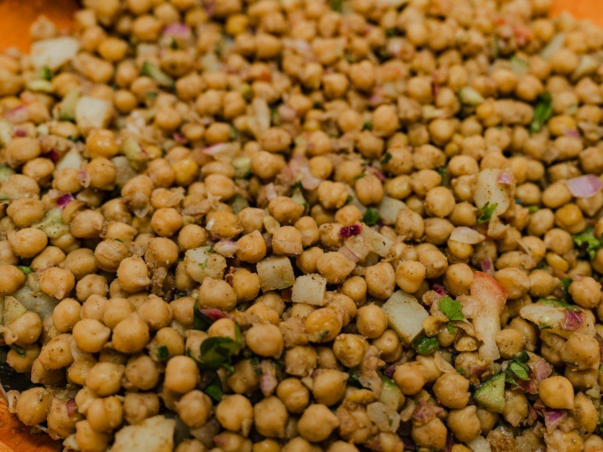
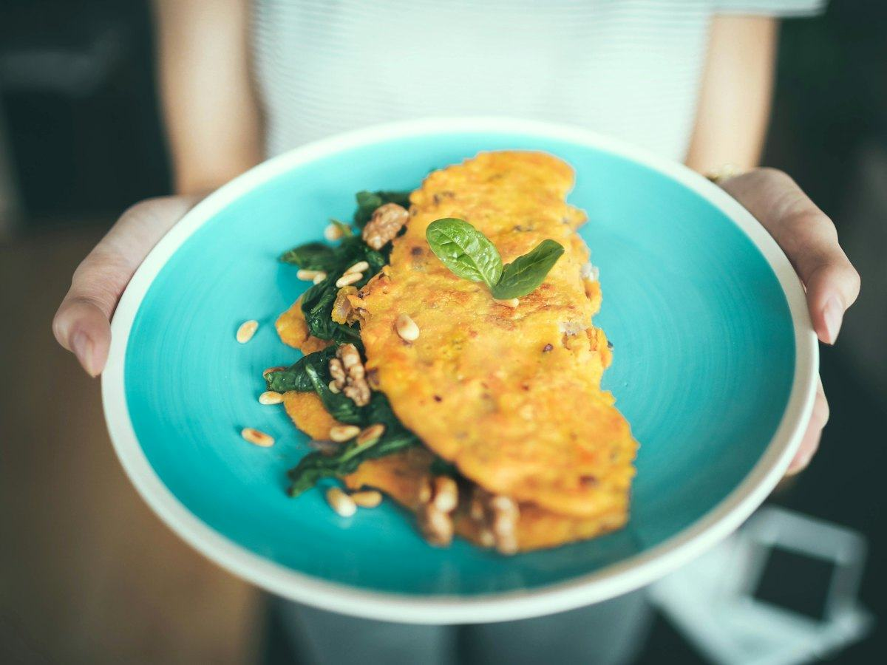
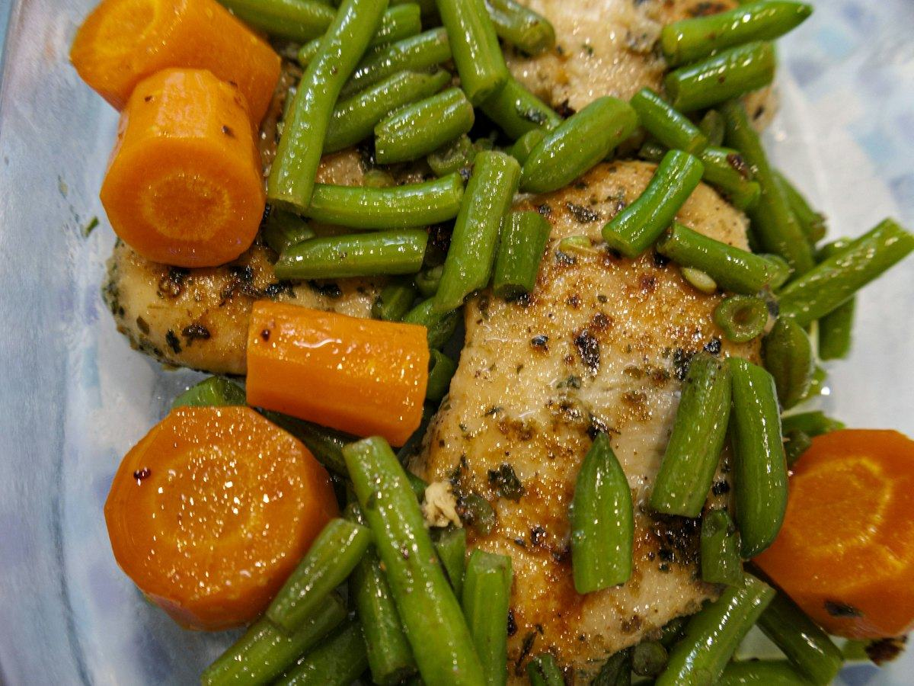
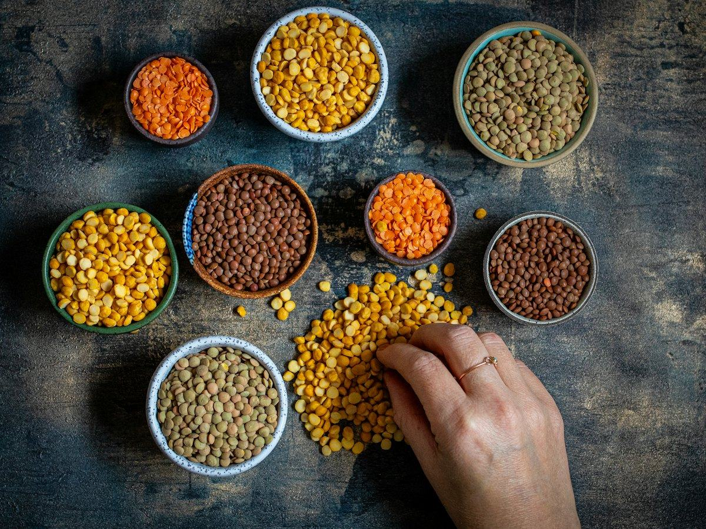

Recetas
3 recetas de salmón fáciles y saludables: al horno, en papillote y en ensalada
Salmón al horno con espárragos, en papillote con verduras y en ensalada con aguacate. Recetas fáciles con calorías, proteínas, hidratos y grasas por ración.
 Por el equipo editorial de Pombo AI
Por el equipo editorial de Pombo AI
12 nov 2026 · 9 min de lectura

Perder peso no pasa por comer poco, sino por comer bien: platos con mucha verdura, proteína y fibra que sacian. Estas cinco recetas son sencillas, económicas y fáciles de repetir. Cada una lleva su tabla nutricional por ración.

Legumbre, pescado y verdura en un solo plato. Se prepara en un momento con garbanzos de bote.
| Proteínas | 30 g | 36 % |
|---|---|---|
| Hidratos de carbono | 34 g | 41 % |
| Grasas | 9 g | 23 % |
| Fibra | 9 g |
El % indica de dónde viene la energía del plato.
Mucha proteína gracias al atún y fibra de los garbanzos, dos cosas que ayudan a quedarse lleno. Es un plato con pocas calorías para lo que sacia.

Mezclar huevos enteros con claras da una tortilla jugosa, con mucha proteína y menos grasa.
| Proteínas | 16 g | 38 % |
|---|---|---|
| Hidratos de carbono | 8 g | 19 % |
| Grasas | 8 g | 43 % |
| Fibra | 2 g |
El % indica de dónde viene la energía del plato.
Es uno de los platos con más proteína por caloría de este artículo. Las verduras dan volumen, así que llena el plato sin sumar mucha energía.
Una crema suave y dulce que funciona como primer plato o como cena ligera.
| Proteínas | 5 g | 9 % |
|---|---|---|
| Hidratos de carbono | 42 g | 71 % |
| Grasas | 5 g | 20 % |
| Fibra | 7 g |
El % indica de dónde viene la energía del plato.
Mucho volumen y pocas calorías: la base son hortalizas con fibra. No es un plato proteico, así que acompáñalo con un segundo de huevo, pescado o legumbre.

Una pechuga jugosa y verduras al vapor o salteadas: un plato que nunca falla.
| Proteínas | 37 g | 50 % |
|---|---|---|
| Hidratos de carbono | 16 g | 22 % |
| Grasas | 9 g | 28 % |
| Fibra | 5 g |
El % indica de dónde viene la energía del plato.
Es el plato con más proteína de esta lista y con muy pocos hidratos. Ideal para la cena si buscas algo ligero que sacie.

Las lentejas de toda la vida, sin chorizo ni panceta. Igual de sabrosas y mucho más ligeras.
| Proteínas | 20 g | 23 % |
|---|---|---|
| Hidratos de carbono | 56 g | 65 % |
| Grasas | 5 g | 12 % |
| Fibra | 10 g |
El % indica de dónde viene la energía del plato.
Mucha fibra y proteína vegetal en un plato económico. Es la receta de este artículo con más hidratos, por lo que da energía para toda la tarde.
Cómo calculamos los valores: sumamos los ingredientes con la base pública del USDA (FoodData Central, SR Legacy) y dividimos entre las raciones. Son aproximaciones: cambian según la marca, el tamaño y la cocción. Los sellos "fuente de" y "alta en" siguen los criterios del Reglamento (CE) 1924/2006. Para saber lo que comes de verdad, haz una foto a tu plato con Pombo AI.
¿Cuánto comes de verdad?
Con Pombo AI haces una foto a tu plato y la inteligencia artificial estima calorías, proteínas, hidratos y grasas en segundos. Es una estimación orientativa, no un dato médico.
Combinar proteína (huevo, pescado, legumbres, pollo), fibra (verdura, legumbres, integrales) y una grasa saludable en cantidad moderada ayuda a sentirse lleno con menos calorías.
Aviso: Este artículo es informativo y no sustituye el consejo de un médico o dietista-nutricionista. Si tienes una enfermedad, tomas medicación, estás embarazada o has tenido un trastorno de la conducta alimentaria, consulta con un profesional antes de cambiar tu alimentación.
Salmón al horno con espárragos, en papillote con verduras y en ensalada con aguacate. Recetas fáciles con calorías, proteínas, hidratos y grasas por ración.
Merluza a la gallega, al horno con pimientos y a la plancha con verduras. Tres recetas de pescado blanco con su información nutricional.
Ensalada de pasta integral con atún, tostada de atún y aguacate y tomates rellenos. Recetas fáciles con su información nutricional.